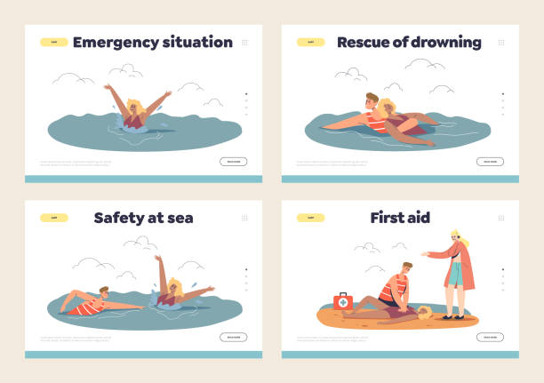

SYMPTOMS
* Chest pain or discomfort
* Upper body pain
* Shortness of breath
* Sweating
* Nausea or vomiting
* Fatigue
* Dizziness
FIRST AID
1. Get Help
Notify a lifeguard, if one is close. If not, ask someone to call 911.
If you are alone, follow the steps below.
2. Move the Person
Take the person out of the water.
3. Check for Breathing
Place your ear next to the person's mouth and nose. Do you feel air on your cheek?
Look to see if the person's chest is moving.
4. If the Person is Not Breathing, Check Pulse
Check the person's pulse for 10 seconds.
5. If There Is No Pulse, Start CPR
For an adult:
->Carefully place the person on their back.
->Place the heel of one hand on the center of the chest at the nipple line. You can also push with one hand on top of the other.
->Press down at least 2 inches. Make sure not to press on ribs.
->Do chest compressions only, at the rate of 100-120 per minute or more. Let the chest rise completely between pushes.
->Check to see if the person has started breathing.